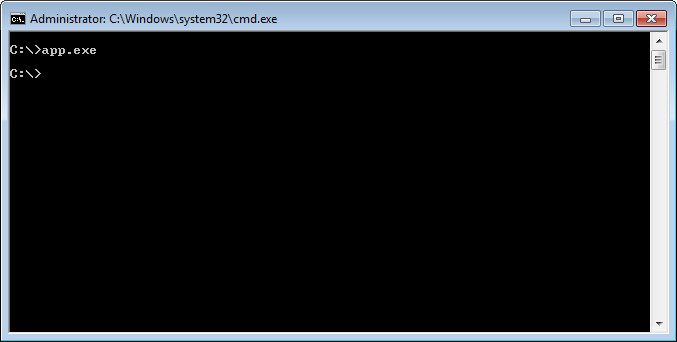
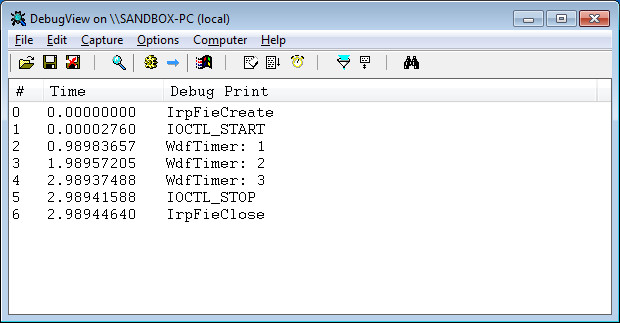

參考資訊：
https://wasm.in/
http://four-f.narod.ru/
https://github.com/steward-fu/ddk
main.c
#include <ntddk.h>
#include <wdf.h>
#define DEV_NAME L"\\Device\\MyDriver"
#define SYM_NAME L"\\DosDevices\\MyDriver"
#define IOCTL_START CTL_CODE(FILE_DEVICE_UNKNOWN, 0x800, METHOD_BUFFERED, FILE_ANY_ACCESS)
#define IOCTL_STOP CTL_CODE(FILE_DEVICE_UNKNOWN, 0x801, METHOD_BUFFERED, FILE_ANY_ACCESS)
ULONG cnt = 0;
WDFTIMER hTimer = 0;
PDEVICE_OBJECT pDevice = { 0 };
void OnTimer(WDFTIMER Timer)
{
cnt += 1;
DbgPrint("WdfTimer: %d", cnt);
}
void IrpFileCreate(WDFDEVICE myDevice, WDFREQUEST myRequest, WDFFILEOBJECT myFileObject)
{
DbgPrint("IRP_MJ_CREATE");
WdfRequestComplete(myRequest, STATUS_SUCCESS);
}
void IrpFileClose(WDFFILEOBJECT myFileObject)
{
DbgPrint("IRP_MJ_CLOSE");
}
void IrpIOCTL(WDFQUEUE myQueue, WDFREQUEST myRequest, size_t myOutLen, size_t myInLen, ULONG myCode)
{
LARGE_INTEGER tt = { 0 };
switch (myCode) {
case IOCTL_START:
DbgPrint("IOCTL_START");
cnt = 0;
tt.HighPart = -1;
tt.LowPart = (ULONG)-10000000;
WdfTimerStart(hTimer, tt.QuadPart);
break;
case IOCTL_STOP:
DbgPrint("IOCTL_STOP");
WdfTimerStop(hTimer, FALSE);
break;
}
WdfRequestComplete(myRequest, STATUS_SUCCESS);
}
NTSTATUS AddDevice(WDFDRIVER myDriver, PWDFDEVICE_INIT pMyDeviceInit)
{
WDFDEVICE device = { 0 };
UNICODE_STRING szDevName = { 0 };
UNICODE_STRING szSymName = { 0 };
WDF_TIMER_CONFIG timer_cfg = { 0 };
WDF_IO_QUEUE_CONFIG io_cfg = { 0 };
WDF_FILEOBJECT_CONFIG file_cfg = { 0 };
WDF_OBJECT_ATTRIBUTES timer_attribute;
RtlInitUnicodeString(&szDevName, DEV_NAME);
RtlInitUnicodeString(&szSymName, SYM_NAME);
WdfDeviceInitAssignName(pMyDeviceInit, &szDevName);
WdfDeviceInitSetIoType(pMyDeviceInit, WdfDeviceIoBuffered);
WDF_FILEOBJECT_CONFIG_INIT(&file_cfg, IrpFileCreate, IrpFileClose, NULL);
WdfDeviceInitSetFileObjectConfig(pMyDeviceInit, &file_cfg, WDF_NO_OBJECT_ATTRIBUTES);
WdfDeviceCreate(&pMyDeviceInit, WDF_NO_OBJECT_ATTRIBUTES, &device);
WdfDeviceCreateSymbolicLink(device, &szSymName);
WDF_TIMER_CONFIG_INIT_PERIODIC(&timer_cfg, OnTimer, 1000);
WDF_OBJECT_ATTRIBUTES_INIT(&timer_attribute);
timer_attribute.ParentObject = device;
WdfTimerCreate(&timer_cfg, &timer_attribute, &hTimer);
WDF_IO_QUEUE_CONFIG_INIT_DEFAULT_QUEUE(&io_cfg, WdfIoQueueDispatchSequential);
io_cfg.EvtIoDeviceControl = IrpIOCTL;
return WdfIoQueueCreate(device, &io_cfg, WDF_NO_OBJECT_ATTRIBUTES, WDF_NO_HANDLE);
}
NTSTATUS DriverEntry(PDRIVER_OBJECT pMyDriver, PUNICODE_STRING pRegistry)
{
WDF_DRIVER_CONFIG config = { 0 };
WDF_DRIVER_CONFIG_INIT(&config, AddDevice);
return WdfDriverCreate(pMyDriver, pRegistry, WDF_NO_OBJECT_ATTRIBUTES, &config, WDF_NO_HANDLE);
}
app.c
#include <windows.h>
#include <winioctl.h>
#include <stdio.h>
#include <stdlib.h>
#define IOCTL_START CTL_CODE(FILE_DEVICE_UNKNOWN, 0x800, METHOD_BUFFERED, FILE_ANY_ACCESS)
#define IOCTL_STOP CTL_CODE(FILE_DEVICE_UNKNOWN, 0x801, METHOD_BUFFERED, FILE_ANY_ACCESS)
int main(int argc, char **argv)
{
DWORD dwRet = 0;
HANDLE hFile = NULL;
hFile = CreateFile("\\\\.\\MyDriver", GENERIC_READ | GENERIC_WRITE, 0, NULL, OPEN_EXISTING, 0, NULL);
DeviceIoControl(hFile, IOCTL_START, NULL, 0, NULL, 0, &dwRet, NULL);
Sleep(3000);
DeviceIoControl(hFile, IOCTL_STOP, NULL, 0, NULL, 0, &dwRet, NULL);
CloseHandle(hFile);
return 0;
}
完成

